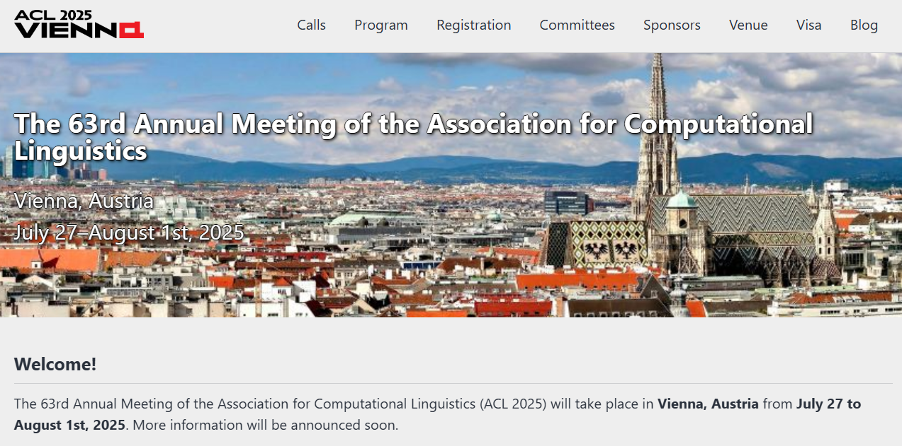
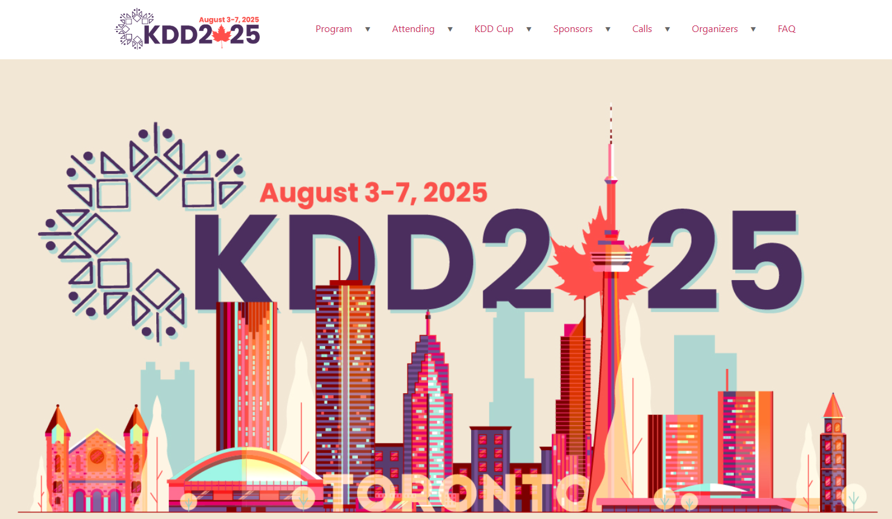

- ACL-2025 CCF-A Yidan Wang, Yubing Ren, Yanan Cao, Binxing Fang. From Trade-off to Synergy: A Versatile Symbiotic Watermarking Framework for Large Language Models.
- ACL-2025 CCF-A Yidan Wang, Yanan Cao, Yubing Ren, Fang Fang, Zheng Lin, Binxing Fang. PIG: Privacy Jailbreak Attack on LLMs via Gradient-based Iterative In-Context Optimization.
- ACL-2025 CCF-A Xiaowei Zhu, Yubing Ren, Yanan Cao, Xixun Lin, Fang Fang, Yangxi Li. Reliably Bounding False Positives: A Zero-Shot Machine-Generated Text Detection Framework via Multiscaled Conformal Prediction.
- ACL-2025 CCF-A Lanxue Zhang, Yanan Cao, Yuqiang Xie, Fang Fang, Yangxi Li. Dynamic Evaluation with Cognitive Reasoning for Multi-turn Safety of Large Language Models.
- KDD-2025 CCF-A Yongxuan Wu, Yang Liu, Xixun Lin, Hong Zhou, Yanan Cao, Lixin Zou, Yanmin Shang, Yanbing Liu. FairCDR: Transferring Fairness and User Preferences for Cross-Domain Recommendation.
信工所ASCII Lab五篇工作被ACL及KDD主会接收
发布时间：2025年5月16日
2025年5月15日，ACL2025结果公布，ASCII Lab投稿4篇均被主会录用，这也是课题组继2023年ACL2023后再次同时中稿4篇；同期KDD2025结果公布，ASCII Lab中稿1篇，这也是课题组首次在KDD会议上发表论文。
ACL 2025（第63届计算语言学协会年会）是自然语言处理（NLP）和计算语言学领域的顶级国际会议，由计算语言学协会（ACL）主办，将于2025年7月27日至8月1日在奥地利维也纳举行。会议涵盖语法、语义、机器翻译、情感分析等前沿领域，旨在推动语言学与计算科学的融合，并促进NLP技术的创新与应用。 ACL 2025采用ACL Rolling Review (ARR)审稿系统，投稿竞争激烈。

KDD 2025（第31届ACM SIGKDD知识发现与数据挖掘会议）是数据科学领域的顶级国际会议，由ACM SIGKDD主办，将于2025年8月3日至7日在加拿大多伦多举行。会议分为研究轨道（Research Track）和应用数据科学轨道（Applied Data Science Track），涵盖数据挖掘、机器学习、大数据分析等前沿方向
